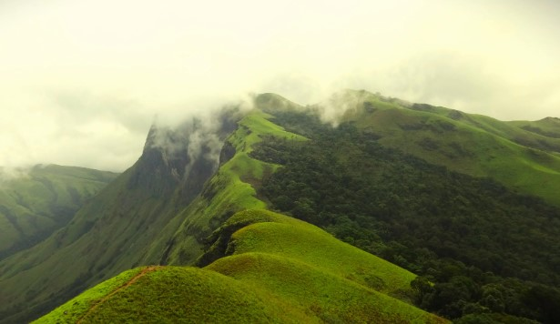

Explore the beauty of Netravathi Trek and plan your adventure.
The Netravathi Trek is a popular trekking route located in the Western Ghats of Karnataka. This scenic trek offers panoramic views of lush green valleys, dense forests, and waterfalls.
Route 1 takes you through dense forests and offers breathtaking views of the surrounding landscape. It is a moderately challenging route suitable for those with some trekking experience.
Route 2 is a slightly more challenging route, with steep ascents and rocky paths. It is perfect for adventure enthusiasts looking for a tough challenge.
This is the picturesque trail view, where trekkers can enjoy the tranquility of the surroundings and take in the natural beauty of the area. The path winds through lush forests, offering glimpses of local flora and fauna.
The Waterfall View is one of the highlights of the trek. A beautiful waterfall cascades down the rocky terrain, providing a refreshing stop for trekkers to rest and marvel at the natural spectacle.
To book your trek, fill out the form below or contact us directly via the details provided.
If you need to cancel your booking, please contact us at least 48 hours before your scheduled trek date. Cancellations made after this time will not be refunded.
If you have any questions or need more information, reach out to us: